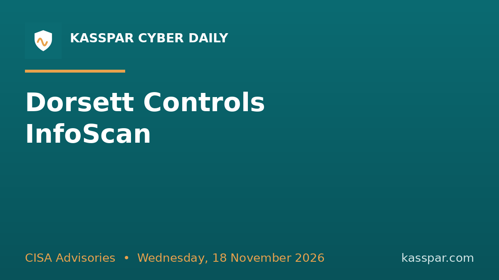
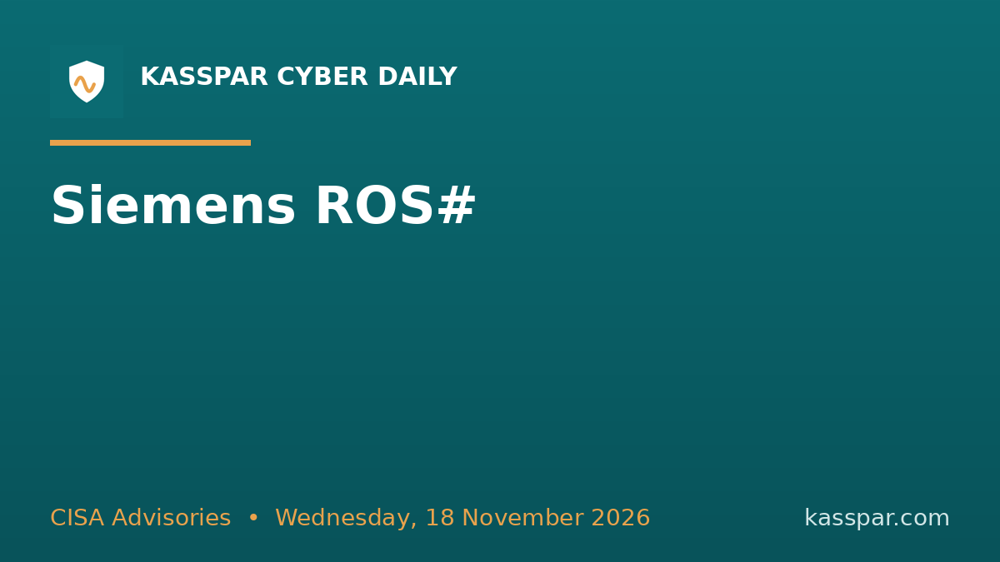

X / Twitter 134/280
📧 Scam alert: Dorsett Controls InfoScan Slow down on urgent messages before you click. #CyberSecurity #InfoSec https://www.cisa.gov/news-events/ics-advisories/icsa-26-321-01
Wednesday, 18 November 2026 — review, tweak if you like, then post.

CISA Advisories
📧 Scam alert: Dorsett Controls InfoScan Slow down on urgent messages before you click. #CyberSecurity #InfoSec https://www.cisa.gov/news-events/ics-advisories/icsa-26-321-01
🔐 Dorsett Controls InfoScan Phishing keeps evolving — here's the latest 👇 View CSAF Summary Successful exploitation of these vulnerabilities could allow an attacker to retrieve sensitive system information, access application data without authorization, recover stored credentials, or intercept and manipulate network communications. The following versions of Dorsett Controls InfoScan are affected: InfoScan <=1.45.0 (CVE-2026-117659, CVE-2026-120157, CVE-2026-120255… ⚡ Why it matters: Slow down on urgent emails; verify the sender before you click. Are your systems covered? What's your team doing about this? 💬 #CyberSecurity #InfoSec #Phishing #VulnManagement #PatchNow
✅ Tip: post the text above, then add the link below as the first comment (keeps reach up & avoids spam flags).
🔗 Source (CISA Advisories): https://www.cisa.gov/news-events/ics-advisories/icsa-26-321-01
The Hacker News
🛠️ Heads up, admins: Hackers Exploiting Critical Puppet RCE Flaw Affecting Enterprise Management Servers Patch fast — attackers already are. #CyberSecurity #InfoSec https://thehackernews.com/2026/11/hackers-exploiting-critical-puppet-rce.html
🔐 Hackers Exploiting Critical Puppet RCE Flaw Affecting Enterprise Management Servers A vulnerability worth acting on today 👇 The U.S. Cybersecurity and Infrastructure Security Agency (CISA) on Tuesday added a critical security flaw impacting Perforce Puppet, an enterprise infrastructure-as-code (IaC) and configuration management platform, to its Known Exploited Vulnerabilities (KEV) catalog, citing reports of active exploitation. The vulnerability, tracked as CVE-2026-115731 (CVSS score: 9.4), is a case of ⚡ Why it matters: Patch affected systems promptly and confirm the fix actually applied. Are your systems covered? What's your team doing about this? 💬 #CyberSecurity #InfoSec #VulnManagement #PatchNow
✅ Tip: post the text above, then add the link below as the first comment (keeps reach up & avoids spam flags).
🔗 Source (The Hacker News): https://thehackernews.com/2026/11/hackers-exploiting-critical-puppet-rce.html

CISA Advisories
🚨 Actively exploited: Siemens ROS# Patch fast — attackers already are. #CyberSecurity #InfoSec https://www.cisa.gov/news-events/ics-advisories/icsa-26-321-06
🔐 Siemens ROS# A vulnerability worth acting on today 👇 View CSAF Summary ROS# before version 2.3.1 contains a code injection vulnerability that could allow an attacker that is able to pass a crafted message definition file to the user to inject arbitrary code into the generated program. Siemens has released a new version for ROS# and recommends to update to the latest version. The following versions of Siemens ROS# are affected: ROS#… ⚡ Why it matters: Patch affected systems promptly and confirm the fix actually applied. Are your systems covered? What's your team doing about this? 💬 #CyberSecurity #InfoSec #VulnManagement #PatchNow
✅ Tip: post the text above, then add the link below as the first comment (keeps reach up & avoids spam flags).
🔗 Source (CISA Advisories): https://www.cisa.gov/news-events/ics-advisories/icsa-26-321-06